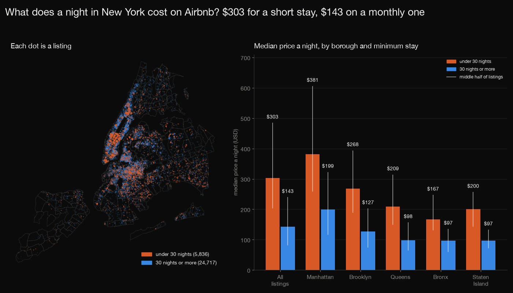
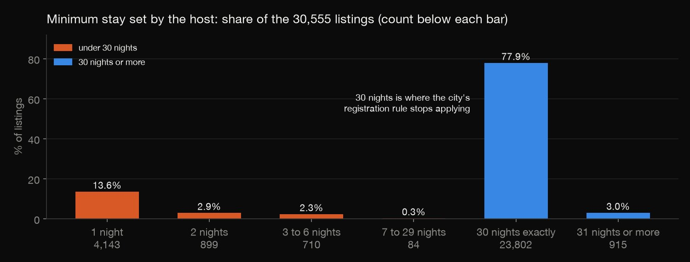
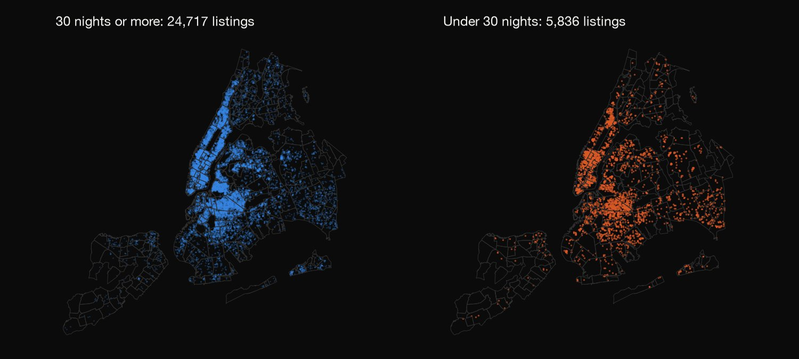
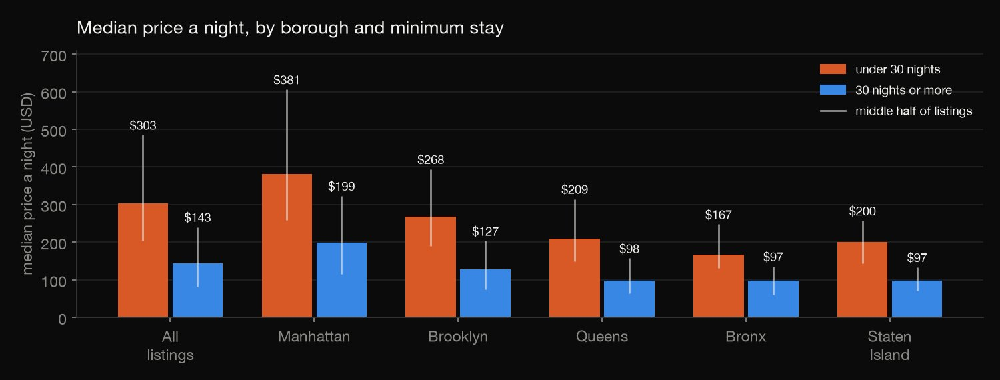
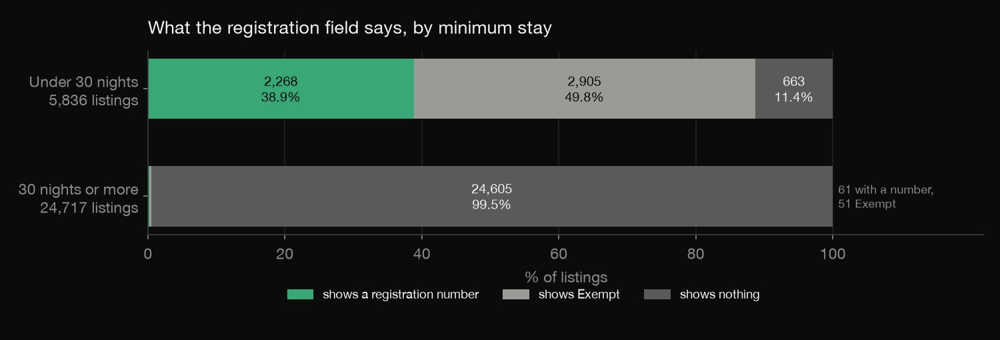
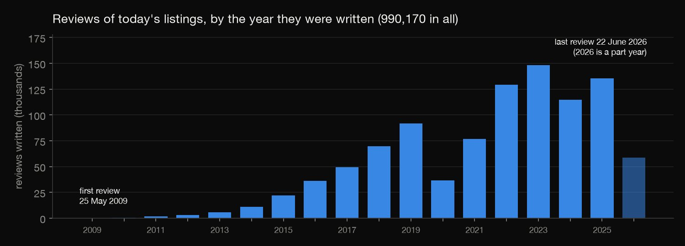

Python · Data cleaning · 2026-10
What Does a Night in New York Cost on Airbnb?
Five files in three formats, cleaned and combined: 80.9% of New York's Airbnb listings need a stay of 30 nights or more, the median price a night is $303 for a short stay and $143 for a monthly one, and the files agree with each other except for 296 listings that only one table has.

The price is a quote for one stay, after discounts and with no cleaning or service fee, not what guests paid; 71.3% of listings have one, mostly those with availability in the next year. The registration field shows what a listing says, not whether it is legal. One snapshot (14 to 23 June 2026). Short and monthly prices price different stay lengths. Coordinates are anonymised to within 150 metres. Data: Inside Airbnb, CC BY 4.0.
01 — The problem
The usual first exercise with Airbnb listings is to strip the dollar signs from the price and take the mean. Does that answer what a night costs, and do the files you combine even agree with each other?
The task follows DataCamp's "Exploring the NYC Airbnb Market" (import, clean and combine listings from several file types). The data is Inside Airbnb's real New York City files of June 2026: five files in three formats, not a course file.
02 — What I built
Five files, checked against each other and then questioned:
- The files: the detailed and summary listings, the reviews, and the neighbourhood list and outlines, imported, cleaned and combined.
- The stay: how long the minimum stays are, and what the price quote priced.
- The price: the median and middle half by borough, room type and minimum stay.
- The registration field: what it says, by minimum stay.
- Check:
check.pyrecounts everything in plain Python: 380 numbers.
03 — How it was built
- 01
Download the five files
Inside Airbnb's New York City files of 14 June 2026: the detailed listings (gzipped CSV, 90 columns), the summary listings (CSV, 19 columns), the neighbourhood list (CSV) and outlines (GeoJSON), and the reviews (CSV). None is committed (about 44 MB); the script keeps their checksums. Host names, titles and descriptions are never used.
BASE = "https://data.insideairbnb.com/united-states/ny/new-york-city/2026-06-14/" - 02
Clean what is messy
The price is text ("$1,234.56"): all 21,515 match that form and convert. Registration numbers are trimmed and put in upper case (23 differed). The price quote is a JSON document inside a CSV column, read for all 22,678. Dates are parsed.
L["price_clean"] = pd.to_numeric(L["price"].astype(str).str.replace(r"[$,]", "", regex=True), errors="coerce") - 03
Combine the files
The two listings tables are compared field by field on the 30,259 ids they share: 14 fields, no difference. The summary table also has 296 listings the detailed one lacks, so it becomes the full list. The reviews are counted per listing and compared with the review count and dates in the listings, and each listing's point is tested against the outline of its own neighbourhood.
crossings += Poly(np.array(ring)).contains_points(pts) - 04
Ask what a night costs
The stay length is the minimum stay, with 30 nights as the cut-off. The price is the quote's total divided by its nights, so the quote's stay and discounts are read from its JSON. Medians and quartiles are taken by borough, room type and minimum stay, on the listings that have a price.
S["stay"] = np.where(S["minimum_nights"].isna(), "unknown", np.where(S["minimum_nights"] < 30, SHORT, LONG)) - 05
Recompute it by hand
check.pyrecounts every count, comparison and statistic in plain Python from the downloaded files, with no pandas, numpy or matplotlib, including a ray-casting test of every listing against the outline of its own neighbourhood.if (yi > y) != (yj > y) and x < (xj - xi) * (y - yi) / (yj - yi) + xi:
04 — Results
| File | Format | Rows |
|---|---|---|
| Detailed listings | CSV.gz | 30,259 |
| Summary listings | CSV | 30,555 |
| Neighbourhood list | CSV | 230 |
| Neighbourhood outlines | GeoJSON | 233 |
| Reviews | CSV | 990,170 |
The files agree, with two holes. All 14 fields compared between the two listings tables (room type, minimum stay, review count and date, registration, neighbourhood, host, coordinates, availability and more) are identical for all 30,259 listings in both, and the summary price is the detailed price rounded half up to the dollar for all 21,515 that are priced. The first hole: the summary table has 296 listings the detailed one lacks, all private rooms with a minimum stay under 30 nights and no registration field, 246 of them in Manhattan. The second: the reviews file covers 21,939 listings, all in the summary table, and the 239 missing from the detailed table are among those 296. Review counts and dates match the listings for all 30,555, and every listing is inside the outline of its own neighbourhood; the 233 outlines are for 230 neighbourhoods (Bayswater, City Island and Howard Beach are each drawn in two pieces), and 7 neighbourhoods have no listing.

A night is not a night. The minimum stay is 30 nights or more for 24,717 listings (80.9%) and exactly 30 for 23,802 (77.9%); only 5,836 (19.1%) can be booked for fewer, 4,143 of them for a single night. Thirty nights is also where the city's registration rule stops applying: stays of 30 consecutive days or more are exempt. Below, a short stay is a listing with a minimum stay under 30 nights and a monthly stay one of 30 nights or more.

Manhattan has 54.5% of the short-stay listings and 45.7% of all listings.
| Median a night | Short stay | Monthly |
|---|---|---|
| All listings | $303 | $143 |
| Manhattan | $381 | $199 |
| Brooklyn | $268 | $127 |
| Queens | $209 | $98 |
| Bronx | $167 | $97 |
| Staten Island | $200 | $97 |

What the price is. It is not a list price. Airbnb was asked for a quote for one particular stay, and the price is that quote's total, after any discount, divided by its nights. For the 17,582 monthly-stay listings with a quote the stay was 30 nights for nearly all (17,483 equal the minimum stay) and began a median 36 days after the scrape (up to 335); 8,741 of them (49.7%) carry a discount, a median 17.6% off. For the 5,096 short-stay listings with a quote the median stay was 1 night, starting a median 4 days after the scrape. None of the 22,678 quotes has a cleaning fee or a service fee, and only 58 have taxes: the price is the accommodation charge, not what a guest pays at checkout.
What a night costs. 21,797 of the 30,555 listings (71.3%) have a price. Their median is $176 and their mean $278.33: the mean is pulled up by 622 listings over $1,000 and 38 over $5,000 (the highest is $30,973), so the median is the better typical price. The median is $303 for short stays (middle half $203 to $485) and $143 for monthly ones ($81 to $240), and short stays cost more in every borough and every room type: entire homes $404.50 against $202, private rooms $248 against $77. Only 142 short stays are priced in the Bronx and 53 in Staten Island.
Missing prices. 8,758 listings (28.7%) have no price. Most of them (6,800, or 77.6%) have no availability in the next 365 days: 6,800 of the 6,801 listings with no availability have no price, against 8.2% of the 23,754 that have some. Short stays are priced more often than monthly ones (90.8% against 66.7%).
| Registration field | Number | Exempt | None |
|---|---|---|---|
| Short stays | 2,268 | 2,905 | 663 |
| Monthly stays | 61 | 51 | 24,605 |

Registration. 5,173 of the 5,836 short-stay listings (88.6%) show a registration number or Exempt, against 112 of the 24,717 monthly ones (0.5%). 663 short-stay listings show nothing, including all 296 that have no detailed record. The 2,330 registration numbers in the detailed table are 2,013 distinct numbers: 255 numbers appear on more than one listing (572 listings, up to 6 on one number); the data does not say why.

The course questions. The reviews run from 25 May 2009 to 22 June 2026: 990,170 reviews of 21,939 listings, with 8,616 listings having none. 13,009 of the 30,555 listings (42.6%) are private rooms and 16,808 (55.0%) entire homes. The average price is $278.33, against a median of $176. The reviews file holds only reviews of listings still on Airbnb in June 2026, so the early years are understated.
05 — What I'd do next
- Fit a price model (borough, room type, bedrooms, reviews) on the priced listings, and compare short and monthly stays like for like.
- Download the calendar file to price the same listing on many dates, instead of one quote.
- Add the host columns, to see how many listings belong to hosts with many and whether they are the ones with no registration number.